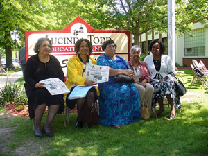

Testimony from Bangladesh Center for Worker Solidarity Presented at Sumner School in Topeka, KS
Submitted on Sat, 05/19/2007 - 6:34am
Center Renamed for Brown v Board figure Lucinda Todd
The Capital-Journal
Published Friday, May 18, 2007
Lucinda Todd was a "shero," a mild-mannered schoolteacher and mother who had secret inner powers to bring down an unfair social system.
That is how a speaker described her Thursday at a dedication service renaming Topeka Unified School District 501's Topeka Education Center at 1900 S.W. Hope as the Lucinda Todd Education Center. The building also houses the Hope Street Academy.
Todd, a leader of the movement that led to the 1954 U.S. Supreme Court decision outlawing segregated schools, died in 1996. Thursday was the 53rd anniversary of the decision.
"It's appropriate that a school named for her should be on Hope Street," said Ramona Palmer Eason, chairwoman of the board of the Brown Foundation. Hope was a major theme of the speakers at the dedication ceremony. The guests included Todd family members and others, some of whom knew her personally and some who were too young to have met her.
Her nephew, Paul Brady, was inspired to become a lawyer and then a judge. A former student, the Rev. Michael F. Blevins, went on to attend law school and seminary. She inspired a number of her relatives to go into education.
Among the speakers was Todd's daughter Nancy Todd Noches, who can actually claim partial responsibility for the history-changing 1954 court decision. One day as Nancy was waiting for the school bus to take her and her friends to an all-black school miles away, she slipped and narrowly missed being run over by the bus. Her mother decided that was the last straw. The white children in the neighborhood were able to walk to a nearby school. Among other annoyances was that the black schools lacked the musical programs offered in the white schools.
Todd, a member of the local NAACP chapter since 1935, wrote to the national NAACP president and asked for help filing a lawsuit to try to end the separate schools.
When the national organization sent attorneys to Topeka to help, including Thurgood Marshall, later a Supreme Court justice, the strategies were hashed out around Lucinda Todd's dining room table. The table now is held by the Smithsonian Institution.
Blevins suggested someone should acquire Todd's former house at S.W. 10th and Jewell and preserve it as a historic landmark.
Also among the speakers was Celeste Taylor, president of the Kansas National Brown v. Board of Education Committee, who said some would find it strange that a woman living in Pittsburgh would head a Kansas organization. "Your cause is a national and an international one," said Taylor, who referred to Todd as a "shero."
It was the Kansas National Brown v. Board of Education Committee that had asked USD 501 to name a building in Todd's honor.
After the ceremony, Nancy Todd Noches, who lives in Austin, Texas, said she was pleased her mother's contributions to the effort were beginning to get the recognition they deserve, especially in Topeka.
Patrick Woods, recently elected to the USD 501 board of education, agreed. "She was just a footnote in the history books when I grew up," he said. "Hopefully that will change."
Mike Hall can be reached at (785) 295-1209 or mike.hall@cjonline.com.
---
Published Wednesday, May 16, 2007
The 53rd anniversary of the Supreme Court's 1954 historic ruling in Brown v. Board of Education of Topeka will be commemorated Thursday with a presentation of "Crowns: Portraits of Black Women in Church Hats," by playwright Regina Taylor.
The performance is scheduled for 7 p.m. at Washburn University's Andrew J. and Georgia Neese Gray Theater, S.W. 17th and Boswell.
The play is a production of the Unicorn Theater of Kansas City, Mo., and its performance in Topeka is sponsored by the Brown Foundation, Brown v. Board of Education National Historic Site and Washburn University.
Also, the Topeka Unified School District 501 board of education will change the name of the Topeka Education Center, 1900 S.W. Hope, to the Lucinda Todd Education Center during a ceremony at 10 a.m. Thursday at the center.
The name change will apply to the building. Hope Street Academy, which is housed in the center, will retain its name.
The Kansas National Committee to Commemorate Brown v. Board had asked the USD 501 board to name a school in honor of Lucinda Todd, who helped begin the Brown v. Board of Education case and was a teacher in Topeka. Todd died in 1996, but relatives will be in attendance.
At 1 p.m. Thursday, the Kansas National Committee to Commemorate Brown v. Board will conduct its 31st annual dialogue on the Brown v. Board decision at Sumner School, 330 S.W. Western. Speakers will include Kenneth Miller; Celeste Taylor, president of the Kansas National Committee to Commemorate Brown v. Board; Juanita Jackson, president of Biasbusters of Missouri; Joe Douglas, the first black fire chief of Topeka; and educator Sandra Lassiter.